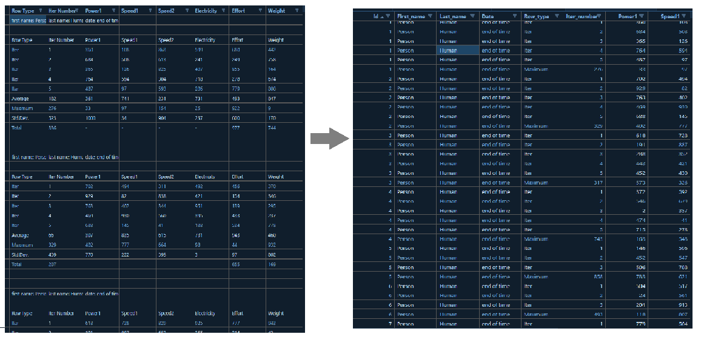

librarian::shelf(fs, tidyverse, janitor, quiet = T)
fs::dir_tree("../data")../data
└── data_cleaning_challenge.csvFebruary 17, 2021
Transform messy data into clean data.

../data
└── data_cleaning_challenge.csv# A tibble: 76,377 × 11
`Row Type` `Iter Number` Power1 Speed1 Speed2 Electricity Effort Weight
<chr> <chr> <chr> <chr> <chr> <chr> <chr> <chr>
1 first name: Per… last name: H… date:… <NA> <NA> <NA> <NA> <NA>
2 <NA> <NA> <NA> <NA> <NA> <NA> <NA> <NA>
3 Row Type Iter Number Power1 Speed1 Speed2 Electricity Effort Weight
4 Iter 1 360 108 863 599 680 442
5 Iter 2 684 508 613 241 249 758
6 Iter 3 365 126 825 407 855 164
7 Iter 4 764 594 304 718 278 674
8 Iter 5 487 97 593 206 779 800
9 Average 182 361 741 231 731 493 847
10 Maximum 276 33 97 154 25 922 9
# ℹ 76,367 more rows
# ℹ 3 more variables: Torque <chr>, ...10 <lgl>, ...11 <lgl>dirty1 <-
dirty |> janitor::clean_names() |> # clean colnames
select(!c(x10, x11)) |> # blank_column
mutate(
first_name = case_when(str_detect(row_type, "name") ~ str_sub(row_type, 13, -1))
, last_name = case_when(str_detect(iter_number, "name") ~ str_sub(iter_number, 12, -1))
, date = case_when(str_detect(power1, "date") ~ str_sub(power1, 7, -1))
, iter = case_when(str_detect(row_type, "Total") ~ row_number()
)) # Create newid
dirty1# A tibble: 76,377 × 13
row_type iter_number power1 speed1 speed2 electricity effort weight torque
<chr> <chr> <chr> <chr> <chr> <chr> <chr> <chr> <chr>
1 first name… last name:… date:… <NA> <NA> <NA> <NA> <NA> <NA>
2 <NA> <NA> <NA> <NA> <NA> <NA> <NA> <NA> <NA>
3 Row Type Iter Number Power1 Speed1 Speed2 Electricity Effort Weight Torque
4 Iter 1 360 108 863 599 680 442 982
5 Iter 2 684 508 613 241 249 758 639
6 Iter 3 365 126 825 407 855 164 86
7 Iter 4 764 594 304 718 278 674 774
8 Iter 5 487 97 593 206 779 800 123
9 Average 182 361 741 231 731 493 847 237
10 Maximum 276 33 97 154 25 922 9 312
# ℹ 76,367 more rows
# ℹ 4 more variables: first_name <chr>, last_name <chr>, date <chr>, iter <int>dirty2 <- dirty1 |>
fill(10:12) |> # fill column 10:12
fill(iter, .direction = 'up') |> # fill up
drop_na(speed1) |> # delete rows with NA
with_groups(iter, ~mutate(., id = cur_group_id())) |> # create a unique id
select(!iter)
dirty2# A tibble: 52,403 × 13
row_type iter_number power1 speed1 speed2 electricity effort weight torque
<chr> <chr> <chr> <chr> <chr> <chr> <chr> <chr> <chr>
1 Row Type Iter Number Power1 Speed1 Speed2 Electricity Effort Weight Torque
2 Iter 1 360 108 863 599 680 442 982
3 Iter 2 684 508 613 241 249 758 639
4 Iter 3 365 126 825 407 855 164 86
5 Iter 4 764 594 304 718 278 674 774
6 Iter 5 487 97 593 206 779 800 123
7 Average 182 361 741 231 731 493 847 237
8 Maximum 276 33 97 154 25 922 9 312
9 Std.Dev. 523 1000 34 904 237 600 170 553
10 Total 336 - - - - 977 744 652
# ℹ 52,393 more rows
# ℹ 4 more variables: first_name <chr>, last_name <chr>, date <chr>, id <int>clean_data <-
dirty2 |>
relocate(id, first_name, last_name, date) |> # relocate columns
mutate(across(iter_number:torque, as.numeric)) |> # convert into numeric (double)
rename_with(str_to_sentence) |> # Rename columns with str_tosenten
filter(!str_detect(Row_type, "Avera|Maximimum|Std.|Total|Row Type")) # delete aditional rows
clean_data# A tibble: 28,427 × 13
Id First_name Last_name Date Row_type Iter_number Power1 Speed1 Speed2
<int> <chr> <chr> <chr> <chr> <dbl> <dbl> <dbl> <dbl>
1 1 Person Human end of … Iter 1 360 108 863
2 1 Person Human end of … Iter 2 684 508 613
3 1 Person Human end of … Iter 3 365 126 825
4 1 Person Human end of … Iter 4 764 594 304
5 1 Person Human end of … Iter 5 487 97 593
6 1 Person Human end of … Maximum 276 33 97 154
7 2 Person Human end of … Iter 1 702 494 311
8 2 Person Human end of … Iter 2 929 82 838
9 2 Person Human end of … Iter 3 763 402 344
10 2 Person Human end of … Iter 4 469 930 560
# ℹ 28,417 more rows
# ℹ 4 more variables: Electricity <dbl>, Effort <dbl>, Weight <dbl>,
# Torque <dbl>